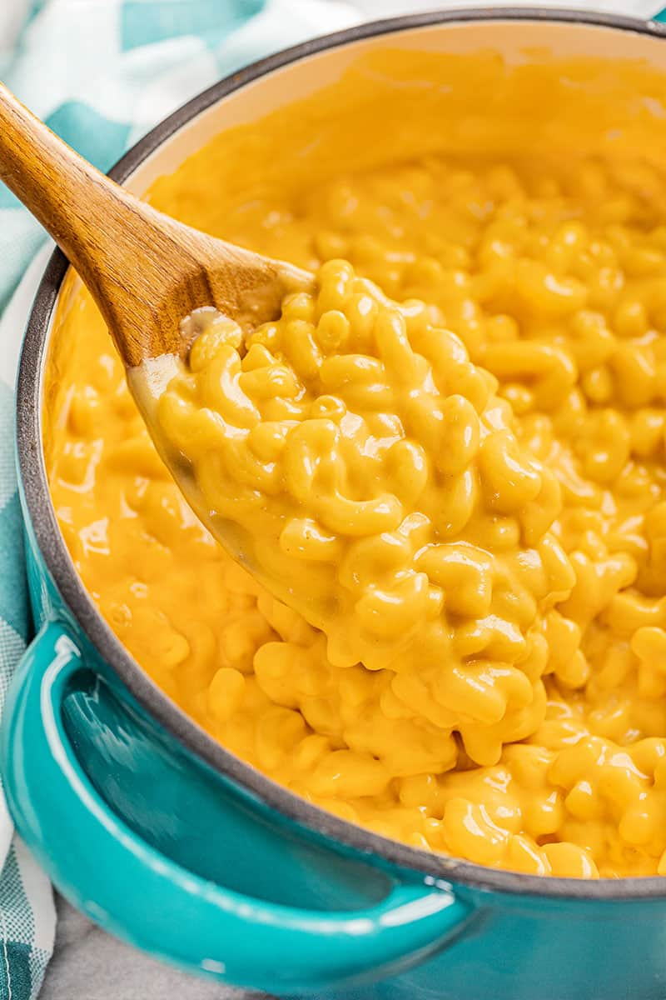

Mac and Cheese
Mac and Cheese
This Mac and Cheese is easy to make on the stovetop and it's ready in just 15 minutes. Skip the box and make the good stuff!
Ingredients (four servings)
- 302 ⅖ g elbow noodles
- 75 ⅔ g salted butter
- 41 ⅔ g all-purpose flour
- 1 teaspoon onion powder
- 1 teaspoon ground mustard
- ⅔ teaspoon salt
- ⅓ teaspoon white pepper
- 569 ⅓ g milk whole, 2%, or 1%
- 151 ⅕ g shredded sharp cheddar cheese
Instructions
- Fill a large saucepan with water, and bring to a boil. Stir in the macaroni; cook until al dente. Drain well.
- Meanwhile in another large saucepan, melt the butter over medium heat. Stir in the flour, salt, pepper, onion powder, and mustard powder and cook 1-2 minutes.
- Pour in milk and whisk until smooth. Cook over medium-high heat, stirring constantly, for 3-5 minutes until the sauce starts to thicken. Turn off the heat and whisk in cheese until melted.
- Pour cooked pasta into the cheese sauce and stir well to combine. Serve hot.